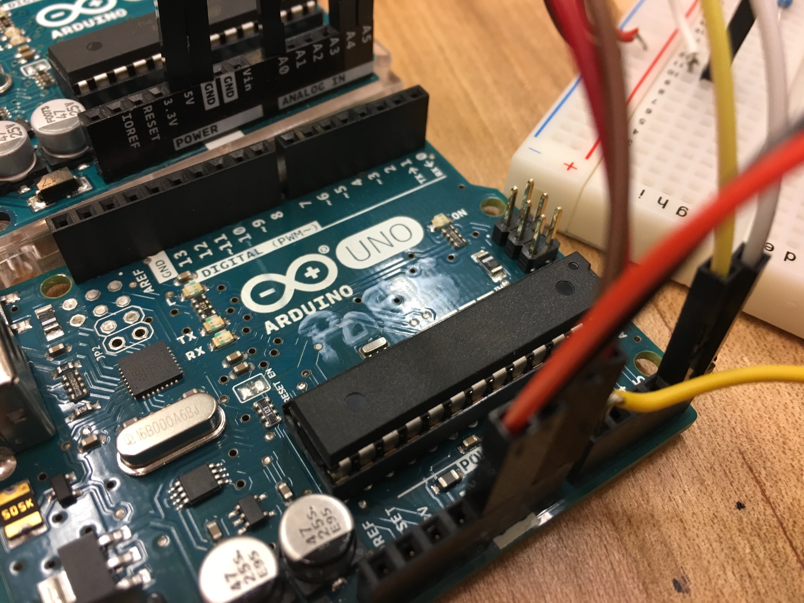
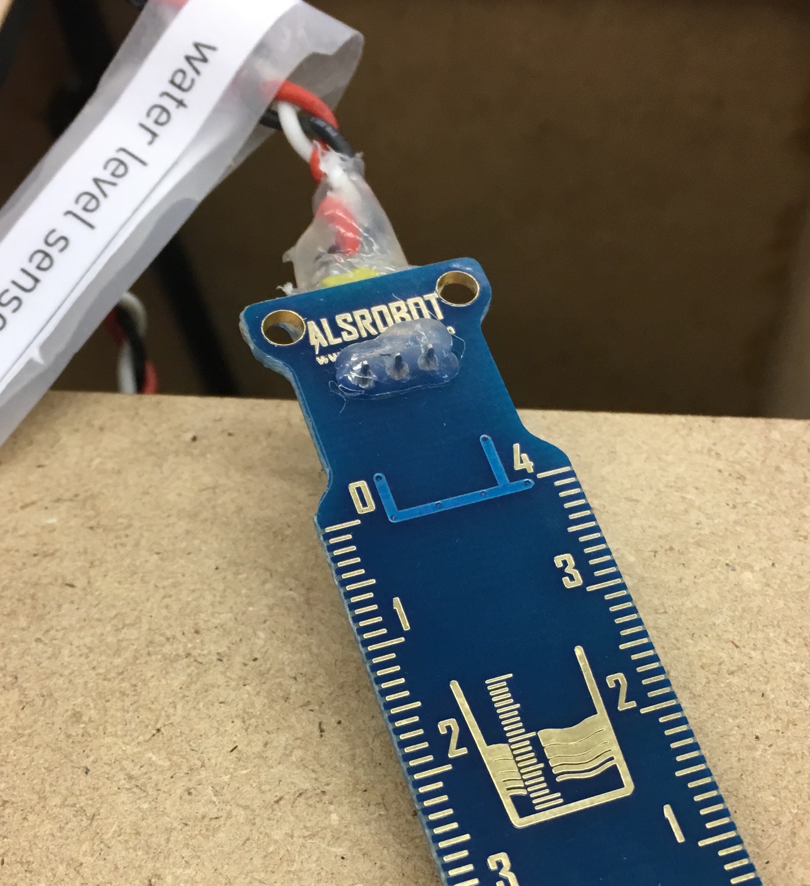

Electrical
Electrical
Each plant has its own light and soil moisture sensors, which are wired to a protoboard and powered by an Arduino. Gardenai additionally uses a separate circuit to sense the water level of the tank and alert the user when it is low.
Arduino Circuit Schematic

Water Level Sensor Circuit Diagram
Arduino Control
 To handle all of the data from the sensors and control the pump and LED’s, we are reliant on two Arduinos. Due to the large number of inputs and limited space on a single Arduino, we decided to set up two Arduinos in a leader and follower system. This enables us to only plug in one Arduino to read the GUI but takes advantage of all of the analog inputs across both Arduinos. The LED’s can be powered off of the 5V, and thusly are plugged into the Arduino. However, the pump requires 12V. To protect the Arduino controlling the pump, we use an Adafruit motor shield to shield the Arduino beneath and enable us to plug in a power brick from the wall to power the pump itself. The arduino control is described more in depth in the firmware section of the website.
Embedded in the nature, no pun intended, of this project are the dueling forces of water and electricity. To make sure the two don’t interfere with each other, the electronics were wired in such a way and the housing designed with the size of those components in mind so that they all could easily fit in a sealed acrylic box to protect it from any aquatic mishaps.
Water Tank Level Alerts
To alert the user when the water in the tank is low, we have a separate water level sensor hooked up to circuit that turns an LED off when the water is too low.
The LED is controlled by the output from an operational amplifier (op-amp) that takes as input the sensor value and outputs ~5V when the sensor input voltage is high enough and ~0V when the sensor is volate is low enough.
The voltage across the water level sensor goes up when the water level is higher and down as the water level detected by the sensor goes down. When the level is low enough, the voltage into the op-amp is low enough that the ouput voltage switches to the lower power rail, and the LED turns off.